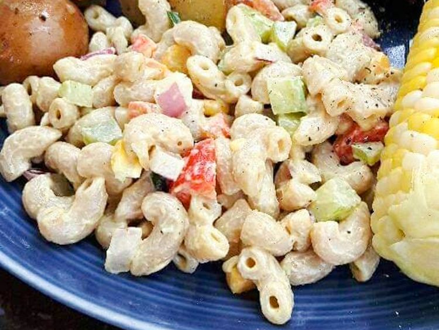

Creamy Vegan Pasta Salad

A creamy and succulent pasta salad for all vegan friends. Easy to make and irresistible!
Ingredients
- 2 cups whole-wheat elbow pasta
- 1/2 bell pepper, diced
- 1/3 cup corn
- 1 stalk celery, diced
- 2 tablespoons diced red onion
- 1/2 cup vegan mayonnaise
- 3 teaspoons white vinegar
- 1 1/2 teaspoons Dijon mustard
- 1/2 teaspoon white sugar (Optional)
- 1/4 teaspoon salt
- 1/4 teaspoon ground black pepper
Steps
- Bring a large pot of lightly salted water to a boil. Cook elbow macaroni in the boiling water, stirring occasionally, until tender yet firm to the bite, about 8 minutes. Strain pasta and rinse under cold water. Drain.
- Combine bell pepper, corn, celery, and red onion in a bowl. Mix together vegan mayo, vinegar, Dijon mustard, sugar, salt, and pepper in a small bowl; pour over vegetables. Mix in cold pasta and toss to combine. Taste and adjust seasonings as needed.
- Cover pasta salad and let cool in fridge for at least 90 minutes before serving, stirring occasionally to mix sauce into pasta evenly.